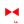
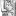

<!doctype html>
<html lang="en">
    <head>
        <meta charset="utf-8">
        <meta http-equiv="X-UA-Compatible" content="IE=edge">
        <meta name="viewport" content="initial-scale=1,user-scalable=no,maximum-scale=1,width=device-width">
        <meta name="mobile-web-app-capable" content="yes">
        <meta name="apple-mobile-web-app-capable" content="yes">
        <link rel="stylesheet" href="css/leaflet.css">
        <link rel="stylesheet" href="css/L.Control.Layers.Tree.css">
        <link rel="stylesheet" href="css/qgis2web.css">
        <link rel="stylesheet" href="css/fontawesome-all.min.css">
        <link rel="stylesheet" href="css/leaflet.photon.css">
        <link rel="stylesheet" href="css/leaflet-measure.css">
        <style>
        html, body, #map {
            width: 100%;
            height: 100%;
            padding: 0;
            margin: 0;
        }
        </style>
        <title>Scythia Kurgan Heat Map</title>
    </head>
    <body>
        <div id="map">
        </div>
        <script src="js/qgis2web_expressions.js"></script>
        <script src="js/leaflet.js"></script>
        <script src="js/L.Control.Layers.Tree.min.js"></script>
        <script src="js/multi-style-layer.js"></script>
        <script src="js/leaflet-heat.js"></script>
        <script src="js/leaflet.rotatedMarker.js"></script>
        <script src="js/leaflet.pattern.js"></script>
        <script src="js/leaflet-hash.js"></script>
        <script src="js/Autolinker.min.js"></script>
        <script src="js/rbush.min.js"></script>
        <script src="js/labelgun.min.js"></script>
        <script src="js/labels.js"></script>
        <script src="js/leaflet.photon.js"></script>
        <script src="js/leaflet-measure.js"></script>
        <script src="data/Tumuluspoint_heatmap_interactive_3.js"></script>
        <script src="data/Scythian_idols_baba_4.js"></script>
        <script src="data/Rivercrossingsshubertmap_5.js"></script>
        <script src="data/River_crossings_dmytro_yavornytsky_6.js"></script>
        <script>
        var map = L.map('map', {
            zoomControl:false, maxZoom:28, minZoom:1
        }).fitBounds([[45.1823627505677,32.23907743966381],[48.916764769099565,39.16951230700786]]);
        var hash = new L.Hash(map);
        map.attributionControl.setPrefix('<a href="https://github.com/tomchadwin/qgis2web" target="_blank">qgis2web</a> &middot; <a href="https://leafletjs.com" title="A JS library for interactive maps">Leaflet</a> &middot; <a href="https://qgis.org">QGIS</a>');
        var autolinker = new Autolinker({truncate: {length: 30, location: 'smart'}});
        // remove popup's row if "visible-with-data"
        function removeEmptyRowsFromPopupContent(content, feature) {
         var tempDiv = document.createElement('div');
         tempDiv.innerHTML = content;
         var rows = tempDiv.querySelectorAll('tr');
         for (var i = 0; i < rows.length; i++) {
             var td = rows[i].querySelector('td.visible-with-data');
             var key = td ? td.id : '';
             if (td && td.classList.contains('visible-with-data') && feature.properties[key] == null) {
                 rows[i].parentNode.removeChild(rows[i]);
             }
         }
         return tempDiv.innerHTML;
        }
        // modify popup if contains media
        function addClassToPopupIfMedia(content, popup) {
            var tempDiv = document.createElement('div');
            tempDiv.innerHTML = content;
            var imgTd = tempDiv.querySelector('td img');
            if (imgTd) {
                var src = imgTd.getAttribute('src');
                if (/\.(jpg|jpeg|png|gif|bmp|webp|avif)$/i.test(src)) {
                    popup._contentNode.classList.add('media');
                    setTimeout(function() {
                        popup.update();
                    }, 10);
                } else if (/\.(mp3|wav|ogg|aac)$/i.test(src)) {
                    var audio = document.createElement('audio');
                    audio.controls = true;
                    audio.src = src;
                    imgTd.parentNode.replaceChild(audio, imgTd);
                    popup._contentNode.classList.add('media');
                    setTimeout(function() {
                        popup.setContent(tempDiv.innerHTML);
                        popup.update();
                    }, 10);
                } else if (/\.(mp4|webm|ogg|mov)$/i.test(src)) {
                    var video = document.createElement('video');
                    video.controls = true;
                    video.src = src;
                    video.style.width = "400px";
                    video.style.height = "300px";
                    video.style.maxHeight = "60vh";
                    video.style.maxWidth = "60vw";
                    imgTd.parentNode.replaceChild(video, imgTd);
                    popup._contentNode.classList.add('media');
                    // Aggiorna il popup quando il video carica i metadati
                    video.addEventListener('loadedmetadata', function() {
                        popup.update();
                    });
                    setTimeout(function() {
                        popup.setContent(tempDiv.innerHTML);
                        popup.update();
                    }, 10);
                } else {
                    popup._contentNode.classList.remove('media');
                }
            } else {
                popup._contentNode.classList.remove('media');
            }
        }
        var title = new L.Control({'position':'topright'});
        title.onAdd = function (map) {
            this._div = L.DomUtil.create('div', 'info');
            this.update();
            return this._div;
        };
        title.update = function () {
            this._div.innerHTML = '<h2>Scythia Kurgan Heat Map</h2>';
        };
        title.addTo(map);
        var abstract = new L.Control({'position':'bottomright'});
        abstract.onAdd = function (map) {
            this._div = L.DomUtil.create('div',
            'leaflet-control abstract');
            this._div.id = 'abstract'

                abstract.show();
                return this._div;
            };
            abstract.show = function () {
                this._div.classList.remove("abstract");
                this._div.classList.add("abstractUncollapsed");
                this._div.innerHTML = 'Burrial Mouns Cluster map Taken from military Shubert map, vectorized by Oleg Kasianov Kharkiv';
        };
        abstract.addTo(map);
        var zoomControl = L.control.zoom({
            position: 'topleft'
        }).addTo(map);
        var measureControl = new L.Control.Measure({
            position: 'topleft',
            primaryLengthUnit: 'meters',
            secondaryLengthUnit: 'kilometers',
            primaryAreaUnit: 'sqmeters',
            secondaryAreaUnit: 'hectares'
        });
        measureControl.addTo(map);
        document.getElementsByClassName('leaflet-control-measure-toggle')[0].innerHTML = '';
        document.getElementsByClassName('leaflet-control-measure-toggle')[0].className += ' fas fa-ruler';
        var bounds_group = new L.featureGroup([]);
        function setBounds() {
        }
        map.createPane('pane_EsriStandard_0');
        map.getPane('pane_EsriStandard_0').style.zIndex = 400;
        var layer_EsriStandard_0 = L.tileLayer('https://server.arcgisonline.com/ArcGIS/rest/services/World_Street_Map/MapServer/tile/{z}/{y}/{x}', {
            pane: 'pane_EsriStandard_0',
            opacity: 1.0,
            attribution: '',
            minZoom: 1,
            maxZoom: 28,
            minNativeZoom: 0,
            maxNativeZoom: 17
        });
        layer_EsriStandard_0;
        map.addLayer(layer_EsriStandard_0);
        map.createPane('pane_Kurgan_heatmapstatic2_1');
        map.getPane('pane_Kurgan_heatmapstatic2_1').style.zIndex = 401;
        var img_Kurgan_heatmapstatic2_1 = 'data/Kurgan_heatmapstatic2_1.png';
        var img_bounds_Kurgan_heatmapstatic2_1 = [[44.668607873,23.733512729],[52.259372023,40.33437918]];
        var layer_Kurgan_heatmapstatic2_1 = new L.imageOverlay(img_Kurgan_heatmapstatic2_1,
                                              img_bounds_Kurgan_heatmapstatic2_1,
                                              {pane: 'pane_Kurgan_heatmapstatic2_1'});
        bounds_group.addLayer(layer_Kurgan_heatmapstatic2_1);
        map.addLayer(layer_Kurgan_heatmapstatic2_1);
        map.createPane('pane_Kurgan_heatmapstatic_2');
        map.getPane('pane_Kurgan_heatmapstatic_2').style.zIndex = 402;
        var img_Kurgan_heatmapstatic_2 = 'data/Kurgan_heatmapstatic_2.png';
        var img_bounds_Kurgan_heatmapstatic_2 = [[44.641658414,23.706563271],[52.286321482,40.361328638]];
        var layer_Kurgan_heatmapstatic_2 = new L.imageOverlay(img_Kurgan_heatmapstatic_2,
                                              img_bounds_Kurgan_heatmapstatic_2,
                                              {pane: 'pane_Kurgan_heatmapstatic_2'});
        bounds_group.addLayer(layer_Kurgan_heatmapstatic_2);
        map.addLayer(layer_Kurgan_heatmapstatic_2);
        function pop_Tumuluspoint_heatmap_interactive_3(feature, layer) {
            var popupContent = '<table>\
                    <tr>\
                        <td colspan="2">' + (feature.properties['fid'] !== null ? autolinker.link(String(feature.properties['fid']).replace(/'/g, '\'').toLocaleString()) : '') + '</td>\
                    </tr>\
                    <tr>\
                        <td colspan="2">' + (feature.properties['SEM_4'] !== null ? autolinker.link(String(feature.properties['SEM_4']).replace(/'/g, '\'').toLocaleString()) : '') + '</td>\
                    </tr>\
                    <tr>\
                        <td colspan="2">' + (feature.properties['Name'] !== null ? autolinker.link(String(feature.properties['Name']).replace(/'/g, '\'').toLocaleString()) : '') + '</td>\
                    </tr>\
                    <tr>\
                        <td colspan="2">' + (feature.properties['SEM_300'] !== null ? autolinker.link(String(feature.properties['SEM_300']).replace(/'/g, '\'').toLocaleString()) : '') + '</td>\
                    </tr>\
                </table>';
            var content = removeEmptyRowsFromPopupContent(popupContent, feature);
			layer.on('popupopen', function(e) {
				addClassToPopupIfMedia(content, e.popup);
			});
			layer.bindPopup(content, { maxHeight: 400 });
        }

        map.createPane('pane_Tumuluspoint_heatmap_interactive_3');
        map.getPane('pane_Tumuluspoint_heatmap_interactive_3').style.zIndex = 403;
        map.getPane('pane_Tumuluspoint_heatmap_interactive_3').style['mix-blend-mode'] = 'difference';
        var Tumuluspoint_heatmap_interactive_3_hm = geoJson2heat(json_Tumuluspoint_heatmap_interactive_3,
                                      '');
        var layer_Tumuluspoint_heatmap_interactive_3 = new L.heatLayer(Tumuluspoint_heatmap_interactive_3_hm, {
            attribution: '',
            interactive: true,
            radius: 20,
            max: 1,
            minOpacity: 1,
            gradient: {0: '#d7191c', 0.25: '#fdae61', 0.5: '#ffffbf', 0.75: '#abdda4', 1: '#2b83ba'}});
        bounds_group.addLayer(layer_Tumuluspoint_heatmap_interactive_3);
        map.addLayer(layer_Tumuluspoint_heatmap_interactive_3);
        function pop_Scythian_idols_baba_4(feature, layer) {
            var popupContent = '<table>\
                    <tr>\
                        <td colspan="2">' + (feature.properties['fid'] !== null ? autolinker.link(String(feature.properties['fid']).replace(/'/g, '\'').toLocaleString()) : '') + '</td>\
                    </tr>\
                    <tr>\
                        <td colspan="2">' + (feature.properties['address'] !== null ? autolinker.link(String(feature.properties['address']).replace(/'/g, '\'').toLocaleString()) : '') + '</td>\
                    </tr>\
                    <tr>\
                        <td colspan="2">' + (feature.properties['number'] !== null ? autolinker.link(String(feature.properties['number']).replace(/'/g, '\'').toLocaleString()) : '') + '</td>\
                    </tr>\
                    <tr>\
                        <td colspan="2">' + (feature.properties['name'] !== null ? autolinker.link(String(feature.properties['name']).replace(/'/g, '\'').toLocaleString()) : '') + '</td>\
                    </tr>\
                </table>';
            var content = removeEmptyRowsFromPopupContent(popupContent, feature);
			layer.on('popupopen', function(e) {
				addClassToPopupIfMedia(content, e.popup);
			});
			layer.bindPopup(content, { maxHeight: 400 });
        }

        function style_Scythian_idols_baba_4_0() {
            return {
                pane: 'pane_Scythian_idols_baba_4',
                interactive: true,
            }
        }
        map.createPane('pane_Scythian_idols_baba_4');
        map.getPane('pane_Scythian_idols_baba_4').style.zIndex = 404;
        map.getPane('pane_Scythian_idols_baba_4').style['mix-blend-mode'] = 'normal';
        var layer_Scythian_idols_baba_4 = new L.geoJson(json_Scythian_idols_baba_4, {
            attribution: '',
            interactive: true,
            dataVar: 'json_Scythian_idols_baba_4',
            layerName: 'layer_Scythian_idols_baba_4',
            pane: 'pane_Scythian_idols_baba_4',
            onEachFeature: pop_Scythian_idols_baba_4,
            pointToLayer: function (feature, latlng) {
                var context = {
                    feature: feature,
                    variables: {}
                };
                return L.circleMarker(latlng, style_Scythian_idols_baba_4_0(feature));
            },
        });
        bounds_group.addLayer(layer_Scythian_idols_baba_4);
        map.addLayer(layer_Scythian_idols_baba_4);
        function pop_Rivercrossingsshubertmap_5(feature, layer) {
            var popupContent = '<table>\
                    <tr>\
                        <td colspan="2">' + (feature.properties['fid'] !== null ? autolinker.link(String(feature.properties['fid']).replace(/'/g, '\'').toLocaleString()) : '') + '</td>\
                    </tr>\
                    <tr>\
                        <td colspan="2">' + (feature.properties['name'] !== null ? autolinker.link(String(feature.properties['name']).replace(/'/g, '\'').toLocaleString()) : '') + '</td>\
                    </tr>\
                </table>';
            var content = removeEmptyRowsFromPopupContent(popupContent, feature);
			layer.on('popupopen', function(e) {
				addClassToPopupIfMedia(content, e.popup);
			});
			layer.bindPopup(content, { maxHeight: 400 });
        }

        function style_Rivercrossingsshubertmap_5_0() {
            return {
                pane: 'pane_Rivercrossingsshubertmap_5',
        rotationAngle: 0.0,
        rotationOrigin: 'center center',
        icon: L.icon({
            iconUrl: 'markers/Rivercrossingsshubertmap_5.svg',
            iconSize: [25.08, 25.08]
        }),
                interactive: true,
            }
        }
        function style_Rivercrossingsshubertmap_5_1() {
            return {
                pane: 'pane_Rivercrossingsshubertmap_5',
                radius: 3.06976,
                opacity: 1,
                color: 'rgba(0,0,0,0.0)',
                dashArray: '',
                lineCap: 'butt',
                lineJoin: 'miter',
                weight: 1,
                fill: true,
                fillOpacity: 1,
                fillColor: 'rgba(255,255,127,1.0)',
                interactive: true,
            }
        }
        map.createPane('pane_Rivercrossingsshubertmap_5');
        map.getPane('pane_Rivercrossingsshubertmap_5').style.zIndex = 405;
        map.getPane('pane_Rivercrossingsshubertmap_5').style['mix-blend-mode'] = 'normal';
        var layer_Rivercrossingsshubertmap_5 = new L.geoJson.multiStyle(json_Rivercrossingsshubertmap_5, {
            attribution: '',
            interactive: true,
            dataVar: 'json_Rivercrossingsshubertmap_5',
            layerName: 'layer_Rivercrossingsshubertmap_5',
            pane: 'pane_Rivercrossingsshubertmap_5',
            onEachFeature: pop_Rivercrossingsshubertmap_5,
            pointToLayers: [function (feature, latlng) {
                var context = {
                    feature: feature,
                    variables: {}
                };
                return L.circleMarker(latlng, style_Rivercrossingsshubertmap_5_0(feature));
            },function (feature, latlng) {
                var context = {
                    feature: feature,
                    variables: {}
                };
                return L.circleMarker(latlng, style_Rivercrossingsshubertmap_5_1(feature));
            },
        ]});
        bounds_group.addLayer(layer_Rivercrossingsshubertmap_5);
        map.addLayer(layer_Rivercrossingsshubertmap_5);
        function pop_River_crossings_dmytro_yavornytsky_6(feature, layer) {
            var popupContent = '<table>\
                    <tr>\
                        <td colspan="2">' + (feature.properties['fid'] !== null ? autolinker.link(String(feature.properties['fid']).replace(/'/g, '\'').toLocaleString()) : '') + '</td>\
                    </tr>\
                    <tr>\
                        <td colspan="2">' + (feature.properties['name'] !== null ? autolinker.link(String(feature.properties['name']).replace(/'/g, '\'').toLocaleString()) : '') + '</td>\
                    </tr>\
                </table>';
            var content = removeEmptyRowsFromPopupContent(popupContent, feature);
			layer.on('popupopen', function(e) {
				addClassToPopupIfMedia(content, e.popup);
			});
			layer.bindPopup(content, { maxHeight: 400 });
        }

        function style_River_crossings_dmytro_yavornytsky_6_0() {
            return {
                pane: 'pane_River_crossings_dmytro_yavornytsky_6',
        rotationAngle: 0.0,
        rotationOrigin: 'center center',
        icon: L.icon({
            iconUrl: 'markers/River_crossings_dmytro_yavornytsky_6.svg',
            iconSize: [18.240000000000002, 18.240000000000002]
        }),
                interactive: true,
            }
        }
        map.createPane('pane_River_crossings_dmytro_yavornytsky_6');
        map.getPane('pane_River_crossings_dmytro_yavornytsky_6').style.zIndex = 406;
        map.getPane('pane_River_crossings_dmytro_yavornytsky_6').style['mix-blend-mode'] = 'normal';
        var layer_River_crossings_dmytro_yavornytsky_6 = new L.geoJson(json_River_crossings_dmytro_yavornytsky_6, {
            attribution: '',
            interactive: true,
            dataVar: 'json_River_crossings_dmytro_yavornytsky_6',
            layerName: 'layer_River_crossings_dmytro_yavornytsky_6',
            pane: 'pane_River_crossings_dmytro_yavornytsky_6',
            onEachFeature: pop_River_crossings_dmytro_yavornytsky_6,
            pointToLayer: function (feature, latlng) {
                var context = {
                    feature: feature,
                    variables: {}
                };
                return L.marker(latlng, style_River_crossings_dmytro_yavornytsky_6_0(feature));
            },
        });
        bounds_group.addLayer(layer_River_crossings_dmytro_yavornytsky_6);
        map.addLayer(layer_River_crossings_dmytro_yavornytsky_6);
        const url = {"Nominatim OSM": "https://nominatim.openstreetmap.org/search?format=geojson&addressdetails=1&",
        "France BAN": "https://api-adresse.data.gouv.fr/search/?"}
        var photonControl = L.control.photon({
            url: url["Nominatim OSM"],
            feedbackLabel: '',
            position: 'topleft',
            includePosition: true,
            initial: true,
            // resultsHandler: myHandler,
        }).addTo(map);
        photonControl._container.childNodes[0].style.borderRadius="10px"
        // Create a variable to store the geoJSON data
        var x = null;
        // Create a variable to store the marker
        var marker = null;
        // Add an event listener to the Photon control to create a marker from the returned geoJSON data
        var z = null;
        photonControl.on('selected', function(e) {
            console.log(photonControl.search.resultsContainer);
            if (x != null) {
                map.removeLayer(obj3.marker);
                map.removeLayer(x);
            }
            obj2.gcd = e.choice;
            x = L.geoJSON(obj2.gcd).addTo(map);
            var label = typeof obj2.gcd.properties.label === 'undefined' ? obj2.gcd.properties.display_name : obj2.gcd.properties.label;
            obj3.marker = L.marker(x.getLayers()[0].getLatLng()).bindPopup(label).addTo(map);
            map.setView(x.getLayers()[0].getLatLng(), 17);
            z = typeof e.choice.properties.label === 'undefined'? e.choice.properties.display_name : e.choice.properties.label;
            console.log(e);
            e.target.input.value = z;
        });
        var search = document.getElementsByClassName("leaflet-photon leaflet-control")[0];
        search.classList.add("leaflet-control-search")
        search.style.display = "flex";
        search.style.backgroundColor="rgba(255,255,255,0.5)" 

        // Create the new button element
        var button = document.createElement("div");
        button.id = "gcd-button-control";
        button.className = "gcd-gl-btn fa fa-search search-button";

        // Insert the button at the beginning of the search control
        search.insertBefore(button, search.firstChild);
        last = search.lastChild;
        last.style.display = "none";
        button.addEventListener("click", function (e) {
            if (last.style.display === "none") {
                last.style.display = "block";
            } else {
                last.style.display = "none";
            }
        });
        var overlaysTree = [
            {label: ' River_crossings_dmytro_yavornytsky', layer: layer_River_crossings_dmytro_yavornytsky_6},
            {label: '  River crossings shubert map', layer: layer_Rivercrossingsshubertmap_5},
            {label: ' Scythian_idols_baba', layer: layer_Scythian_idols_baba_4},
            {label: "Kurgan_heatmap static", layer: layer_Kurgan_heatmapstatic_2},
            {label: "Kurgan_heatmap static 2", layer: layer_Kurgan_heatmapstatic2_1},
            {label: "Esri Standard", layer: layer_EsriStandard_0},]
        var lay = L.control.layers.tree(null, overlaysTree,{
            //namedToggle: true,
            //selectorBack: false,
            //closedSymbol: '&#8862; &#x1f5c0;',
            //openedSymbol: '&#8863; &#x1f5c1;',
            //collapseAll: 'Collapse all',
            //expandAll: 'Expand all',
            collapsed: true,
        });
        lay.addTo(map);
        setBounds();
        var i = 0;
        layer_Rivercrossingsshubertmap_5.eachLayer(function(layer) {
            var context = {
                feature: layer.feature,
                variables: {}
            };
            layer.bindTooltip((layer.feature.properties['name'] !== null?String('<div style="color: #000000; font-size: 8pt; font-family: \'MS Shell Dlg 2\', sans-serif;">' + layer.feature.properties['name']) + '</div>':''), {permanent: true, offset: [-0, -16], className: 'css_Rivercrossingsshubertmap_5'});
            labels.push(layer);
            totalMarkers += 1;
              layer.added = true;
              addLabel(layer, i);
              i++;
        });
        var i = 0;
        layer_River_crossings_dmytro_yavornytsky_6.eachLayer(function(layer) {
            var context = {
                feature: layer.feature,
                variables: {}
            };
            layer.bindTooltip((layer.feature.properties['name'] !== null?String('<div style="color: #000000; font-size: 8pt; font-family: \'MS Shell Dlg 2\', sans-serif;">' + layer.feature.properties['name']) + '</div>':''), {permanent: true, offset: [-0, -16], className: 'css_River_crossings_dmytro_yavornytsky_6'});
            labels.push(layer);
            totalMarkers += 1;
              layer.added = true;
              addLabel(layer, i);
              i++;
        });
        function geoJson2heat(geojson, weight) {
          return geojson.features.map(function(feature) {
            return [
              feature.geometry.coordinates[1],
              feature.geometry.coordinates[0],
              feature.properties[weight]
            ];
          });
        }
        L.ImageOverlay.include({
            getBounds: function () {
                return this._bounds;
            }
        });
        resetLabels([layer_Tumuluspoint_heatmap_interactive_3,layer_Rivercrossingsshubertmap_5,layer_River_crossings_dmytro_yavornytsky_6]);
        map.on("zoomend", function(){
            resetLabels([layer_Tumuluspoint_heatmap_interactive_3,layer_Rivercrossingsshubertmap_5,layer_River_crossings_dmytro_yavornytsky_6]);
        });
        map.on("layeradd", function(){
            resetLabels([layer_Tumuluspoint_heatmap_interactive_3,layer_Rivercrossingsshubertmap_5,layer_River_crossings_dmytro_yavornytsky_6]);
        });
        map.on("layerremove", function(){
            resetLabels([layer_Tumuluspoint_heatmap_interactive_3,layer_Rivercrossingsshubertmap_5,layer_River_crossings_dmytro_yavornytsky_6]);
        });
        </script>        
    </body>
</html>
